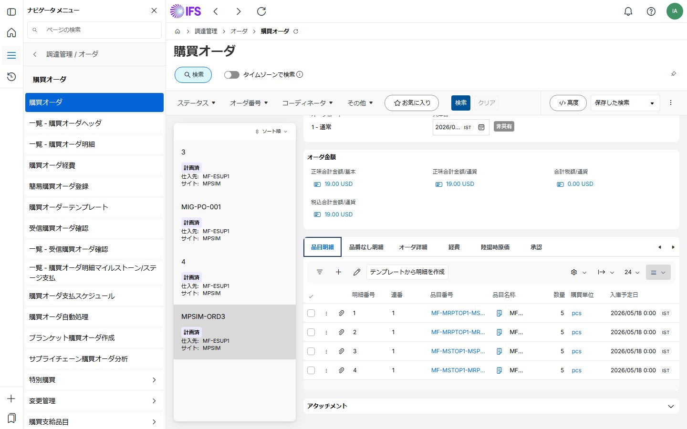

8
Step 8 of 15 — CPOL
発注または明細のキャンセル
Cancel Purchase Order or Line
概要
発注全体のキャンセル、または個々の明細キャンセルを実行します。発注済み・キャンセル済みの明細は編集不可。マンサイニング発注のキャンセルは不可。
使用画面：Purchase Order / Form | Purchase Orders / List

発注全体のキャンセル、または個々の明細キャンセルを実行します。発注済み・キャンセル済みの明細は編集不可。マンサイニング発注のキャンセルは不可。
